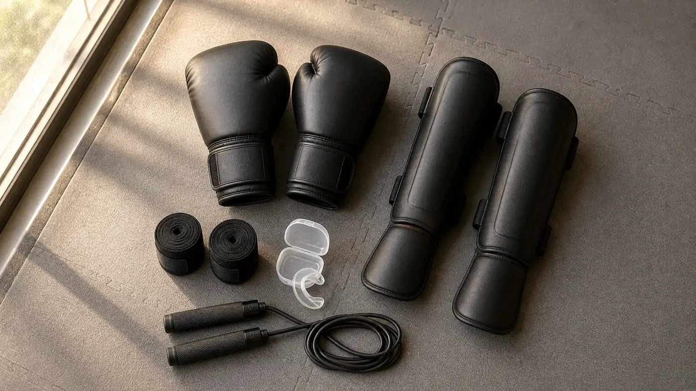
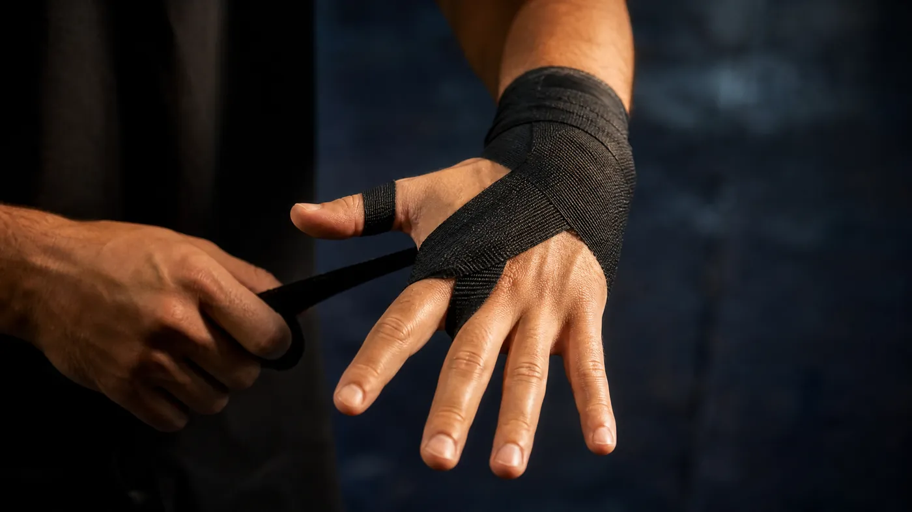
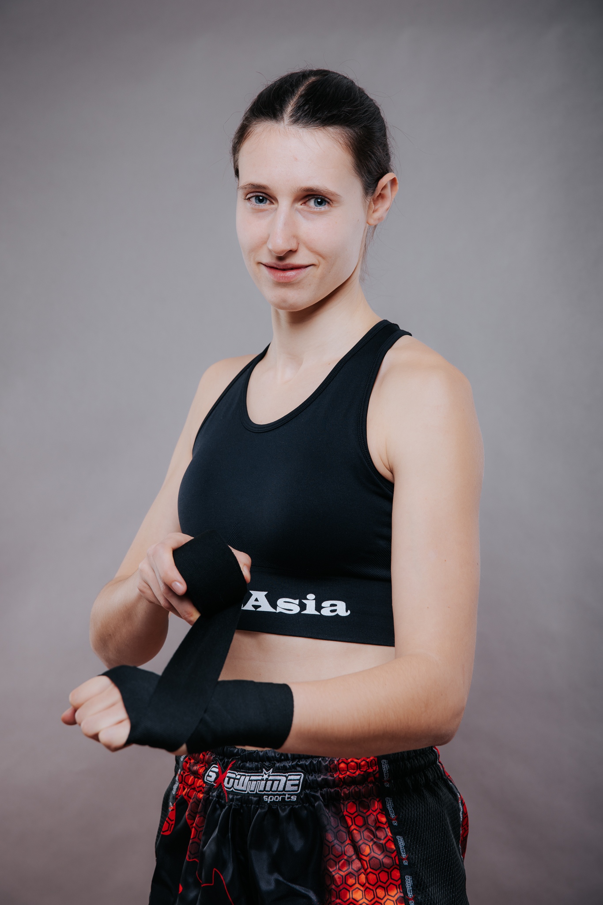

Wer „Kickboxen Ausrüstung“ sucht, landet fast nur bei Shops. Das ist kein Vorwurf: Shops verkaufen nun mal Ausrüstung. Es erklärt aber, warum so viele Anfängerlisten mit Kopfschutz, Brustpanzer und Sandsack beginnen, obwohl du in den ersten Wochen nichts davon anfasst. In der Halle sehen wir das Ergebnis regelmäßig: ein frisch gekauftes Komplettset, und ein paar Monate später liegt der Kopfschutz noch unbenutzt im Schrank.
Wir verkaufen weder Handschuhe noch Schienbeinschoner noch Sandsäcke. Deshalb können wir dir ohne Hintergedanken sagen, was du brauchst und was nicht. Die Liste folgt den Stufen, in denen du die Sachen tatsächlich brauchst: erste Probewochen, regelmäßiges Training, Sparring, Wettkampf. Die Wettkampfregeln haben wir im Regelwerk des internationalen Kickbox-Verbands WAKO nachgelesen, die Preise auf echten Shopseiten geprüft.
Kurz vorweg: Wir empfehlen keine Marken und verlinken keine Produkte. Alle Preise sind Richtwerte aus einer eigenen Abfrage in sieben Online-Shops für Kampfsportbedarf am 3. Oktober 2026, inklusive Mehrwertsteuer, ohne Versand. Einzelpreise ändern sich, die Größenordnung kaum.
Was brauchst du für Kickboxen als Anfänger wirklich?
Für die ersten Trainings fast nichts: Sportkleidung, eine Wasserflasche, ein Handtuch. Alles Weitere kaufst du in der Reihenfolge, in der du es brauchst. In der Regel läuft das so ab: Zuerst lernst du Stand, Deckung und die ersten Schläge in der Luft und an den Pratzen. Dann arbeitest du regelmäßig am Sack und mit Partner. Irgendwann teilt dich dein Trainer zum ersten Sparring ein, und manche wollen danach in den Wettkampf.
Jede dieser Stufen hat ihre eigene Ausrüstung. Wer vorgreift, kauft Dinge, die er lange nicht braucht, oder die falsche Größe, weil er noch nicht weiß, wofür er sie einsetzen wird.
Ausrüstung in vier Stufen: was, wann, ungefähre Kosten
| Stufe | Was du brauchst | Wann | ca. Kosten |
|---|---|---|---|
| 1 · Probewochen | Sportkleidung, Wasserflasche, Handtuch; Handschuhe leihen, falls die Halle welche hat | die ersten Trainings | 0 €, das meiste hast du schon |
| 2 · Regelmäßiges Training | Boxhandschuhe, Bandagen, optional ein Springseil | sobald du weißt, dass du dabeibleibst | rund 35–100 €, Springseil 8–30 € extra |
| 3 · Sparring | Mundschutz, Schienbeinschoner, Tiefschutz, Kopfschutz; für Frauen nach Absprache ein Brustschutz | wenn dein Trainer dich zum ersten Sparring einteilt | rund 75–250 € zusätzlich, Brustschutz 35–60 € |
| 4 · Wettkampf | vom Verband vorgeschriebene Schutzausrüstung, Wettkampfhandschuhe (bei der WAKO 10 oz), Kleidung nach Disziplin | vor dem ersten Turnier, laut Ausschreibung | hängt von Verband und Disziplin ab |
Kosten: Spannen aus Einsteiger- und Mittelklassemodellen in sieben Online-Shops, abgerufen am 3. Oktober 2026. Keine Marken, keine Empfehlung. Profimodelle aus Leder kosten ein Vielfaches.
Was in Shop-Ratgebern fast nie steht: Frag vor dem ersten Training einfach, ob die Halle Leihhandschuhe hat. So findest du heraus, ob dir der Sport liegt, bevor du überhaupt etwas kaufst. Und falls du mit Leihhandschuhen trainierst, trag Bandagen darunter. Das ist angenehmer und hygienischer.

Was brauchst du am Anfang nicht?
Alles, was erst mit Sparring, eigenem Heimtraining oder dem Wettkampf ins Spiel kommt. Konkret sind das die Teile, die Einsteiger am häufigsten zu früh kaufen:
- Kopfschutz. Den trägst du erst im Sparring. Bis dahin liegt er herum, und wenn es so weit ist, willst du ihn ohnehin anprobieren, weil es beim Kopfschutz vor allem auf die Passform ankommt.
- Ein eigener Sandsack. Ohne Korrektur schleifst du am Sack in den ersten Wochen vor allem deine Fehler ein, mit jeder Wiederholung ein bisschen tiefer. Dazu kommen Platz, Aufhängung und ein Preis ab rund 110 Euro.
- Profi-Handschuhe aus Leder. Den Unterschied zum Mittelklassemodell gibt es, aber du merkst ihn erst nach Monaten, nicht in der ersten Woche. Die teuersten Modelle, die wir gefunden haben, kosteten über 300 Euro.
- Boxschuhe. Kickboxen trainierst du auf der Matte, in der Regel barfuß, später im Sparring je nach Disziplin mit Fußschützern.
- Eigene Pratzen. Die hält in der Halle dein Trainer oder dein Partner. Eigene brauchst du erst, wenn du zu Hause mit jemandem trainierst.
- Fußbandagen und Knöchelschützer. Kann man tragen, muss man nicht. Selbst im Wettkampfregelwerk der WAKO sind Fußbandagen in Low Kick und K1 freiwillig.
Welche Größe brauchst du bei Boxhandschuhen?
Das hängt von deinem Körpergewicht ab und davon, worauf du schlägst: auf einen Sack oder auf einen Menschen. Für Sandsack und Pratzen darf der Handschuh leichter sein. Fürs Sparring nimmst du schwerere Handschuhe, damit mehr Polster zwischen deiner Faust und deinem Partner liegt.
Boxhandschuhe werden fast immer in Unzen (oz) angegeben, also nach Gewicht, nicht in S, M oder L. Eine Unze entspricht gut 28 Gramm, ein 16-oz-Handschuh wiegt damit rund 454 Gramm. Mehr Gewicht bedeutet vor allem mehr Polsterung. Das schont deinen Partner und deine eigene Hand, macht den Handschuh aber langsamer.
Richtwerte: Handschuhgewicht nach Körpergewicht und Zweck
| Körpergewicht | Sandsack & Pratzen | Sparring | Wettkampf (WAKO) |
|---|---|---|---|
| unter 55 kg | 8–10 oz | 12–14 oz | 10 oz |
| 55–70 kg | 10–12 oz | 14 oz | 10 oz |
| 70–85 kg | 12–14 oz | 16 oz | 10 oz |
| über 85 kg | 14–16 oz | 16–18 oz | 10 oz |
Sandsack und Sparring: Richtwerte, keine Norm. Zusammengefasst aus den Größentabellen von drei Fachhändlern (Quellen unten), die im Detail voneinander abweichen. Nur die Wettkampfspalte ist eine Vorgabe: Sie folgt dem WAKO-Regelwerk (Fassung vom 4. Mai 2022) für Light Contact, Kick Light, Full Contact, Low Kick und K1. Im Pointfighting werden offene 8-oz-Handschuhe getragen.
Auffällig ist die letzte Spalte. Im Wettkampf tragen nach dem WAKO-Regelwerk alle Kickboxer in Light Contact, Kick Light, Full Contact, Low Kick und K1 denselben 10-oz-Handschuh, egal in welcher Gewichtsklasse. Im Training sparrst du dagegen Woche für Woche mit wechselnden Partnern, und da ist mehr Polster die vernünftige Wahl. Deshalb ist ein 10-oz-Handschuh für die meisten Erwachsenen ein schlechter erster Kauf: am Sack schön schnell, fürs Sparring zu wenig gepolstert.
Unsere Faustregel, wenn du nur ein Paar kaufen willst: Nimm das Sparringgewicht. Mit 14 oder 16 Unzen kannst du am Sack, an den Pratzen und im Sparring trainieren. Mit 10 Unzen nur an den ersten beiden.
Zwei Dinge noch beim Kauf. Probier den Handschuh mit gewickelten Bandagen an, denn die tragen ein bis zwei Zentimeter auf. Und nimm am Anfang Klettverschluss statt Schnürung: Den bekommst du allein zu, und bei WAKO-Turnieren sind geschnürte Handschuhe ohnehin nicht zugelassen.
Wie lang müssen Boxbandagen sein?
Für die meisten Erwachsenen 4 bis 4,5 Meter, bei kleinen Händen 3 bis 3,5 Meter. Die Größentabellen der Händler liegen hier nah beieinander. Ein Händler nennt 3,5 Meter für Einsteiger und 4 bis 4,5 Meter für regelmäßiges Training, große Hände und Sparring. Ein anderer empfiehlt 3 bis 3,5 Meter für Einsteigerinnen, 3,5 bis 4 Meter für Einsteiger und 4 bis 4,5 Meter für Fortgeschrittene. Das WAKO-Regelwerk erlaubt im Wettkampf Bandagen von 2,5 bis 5 Metern Länge bei 5 Zentimetern Breite.
Bandagen sind keine Deko unter dem Handschuh. Das Regelwerk formuliert es nüchtern: Sie sollen Verletzungen verhindern, nicht die Schlagkraft erhöhen. Mit Boxhandschuhen sind sie im WAKO-Wettkampf Pflicht. Gewickelt stabilisieren sie Handgelenk und Mittelhand, also die Stellen, die bei jedem Schlag auf den Sack unter Last stehen.
Im Handel sind leicht elastische Bandagen aus einer Mischung von Baumwolle und Kunstfaser der Normalfall. Daneben gibt es Schnellbandagen, also gepolsterte Innenhandschuhe zum Reinschlüpfen. Die sparen Zeit, aber das WAKO-Regelwerk beschreibt Bandagen als Stoffstreifen, Innenhandschuhe kommen darin nicht vor. Lern lieber gleich das Wickeln. Nach ein paar Wochen geht es schnell.
Wie wickelst du Bandagen richtig?
Es gibt nicht die eine richtige Wickeltechnik. Manche Trainer wickeln das Handgelenk fünfmal, andere zweimal, manche führen die Bandage durch jeden Fingerzwischenraum, andere nur über die Knöchel. Die folgende Variante ist einfach, hält im Training und passt für Bandagen von 4 bis 4,5 Metern.
- Schlaufe über den Daumen. Spreiz die Hand, Handrücken nach oben, und häng die Schlaufe über den Daumen. Die Bandage läuft von dort über den Handrücken, nicht über die Handfläche.
- Handgelenk umwickeln. Wickle die Bandage zwei- bis dreimal um das Handgelenk, fest, aber ohne abzuschnüren. Diese Lagen geben dem Handgelenk Halt.
- Knöchel einwickeln. Führ die Bandage über den Handrücken zu den Knöcheln und wickle sie zwei- bis dreimal um die Mittelhand. Halte die Finger dabei gespreizt, sonst drückt es später beim Faustschluss.
- Durch die Fingerzwischenräume. Führ die Bandage vom Handgelenk aus diagonal über den Handrücken, zwischen kleinem Finger und Ringfinger hindurch und zurück zum Handgelenk. Danach dasselbe zwischen Ring- und Mittelfinger und zwischen Mittel- und Zeigefinger.
- Daumen sichern. Einmal um den Daumen herum und zurück zum Handgelenk.
- Rest verteilen und schließen. Verteil den Rest der Bandage abwechselnd über Knöchel und Handgelenk und schließ sie am Handgelenk mit dem Klettverschluss.
- Faust-Test. Mach eine feste Faust und öffne sie wieder. Fühlt sich die Hand stabil an und drückt nichts, passt es. Kribbeln, kalte oder weiße Finger heißen: zu fest, neu wickeln. Verrutscht die Bandage nach ein paar Schlägen, war sie zu locker.

Der Faust-Test am Ende ist wichtiger als jeder einzelne Schritt davor. Die zweite Hand ist fast immer schwieriger, weil du sie mit der schwächeren Hand wickelst. Nimm dir dafür am Anfang ruhig die doppelte Zeit.
Bandagen gehören nach jedem Training in die Wäsche, am besten in einem Wäschenetz, sonst verknoten sie sich in der Trommel. Danach komplett trocknen lassen und aufrollen. Fang dabei am Klettende an, dann liegt die Daumenschlaufe außen, und du kannst beim nächsten Mal sofort loslegen.
Welche Schutzausrüstung brauchst du fürs Sparring?
Mundschutz, Schienbeinschoner und Tiefschutz gehören zum ersten Sparring dazu, je nach Sparringform auch ein Kopfschutz. Im WAKO-Wettkampf ist das alles Pflicht. Im Training entscheidet dein Trainer, was er verlangt.
Welchen Mundschutz brauchst du, und wie passt du ihn an?
Der Mundschutz ist eines der günstigsten Teile deiner Ausrüstung und das mit der klarsten Datenlage. Eine Metaanalyse von Knapik und Kollegen (2019) hat 26 Studien ausgewertet. In zwölf Kohortenstudien hatten Sportler ohne Mundschutz ein 2,3-fach höheres Risiko für Verletzungen im Mund- und Gesichtsbereich als Sportler mit Mundschutz. Genauso wichtig ist der zweite Befund: In den fünf Kohortenstudien zu Gehirnerschütterungen zeigte der Mundschutz keinen eindeutigen Effekt. Er schützt also Zähne und Mund; dass er auch vor Gehirnerschütterungen schützt, ist nicht belegt.
Für Anfänger reicht ein Boil-&-Bite-Mundschutz aus thermoplastischem Kunststoff, den du selbst anpasst. So geht es nach den üblichen Herstellerangaben:
- Wasser kurz aufkochen, vom Herd nehmen und den Mundschutz für die auf der Packung angegebene Zeit hineinlegen, meist 30 bis 60 Sekunden.
- Mit einem Löffel herausnehmen und kurz abkühlen lassen, damit du dich nicht verbrennst.
- Einsetzen, fest zubeißen und mit Zunge und Fingern an Zähne und Zahnfleisch drücken.
- Danach in kaltes Wasser legen, damit die Form hält.
Sitzt er nicht, lassen sich die meisten Modelle noch ein- bis zweimal neu anpassen. Wer eine feste Zahnspange trägt, braucht ein spezielles Modell; im WAKO-Wettkampf ist ein Mundschutz über einer Zahnspange nur mit zahnärztlicher Bescheinigung erlaubt. Alternativ kann dir dein Zahnarzt einen individuell angepassten Mundschutz anfertigen. Frag dort nach den Kosten.
Welche Schienbeinschoner brauchst du fürs Kickboxen?
Für Kickboxen mit Low Kicks brauchst du Schienbeinschoner, die Schienbein und Spann abdecken und mit Klett am Unterschenkel halten. Das WAKO-Regelwerk schreibt genau das für Low Kick und K1 vor und verbietet dort ausdrücklich Stoffschoner im Strumpf-Stil. In Pointfighting, Light Contact, Kick Light und Full Contact reicht der Schoner vom Knie bis zum Fußrücken, dazu kommt ein separater Fußschutz.
Auch im Training hat das einen Grund. Stoffschoner verrutschen, sobald Schienbein auf Schienbein trifft. Spätestens wenn dein Partner deinen Roundhouse-Kick zum ersten Mal mit dem Schienbein blockt, merkst du, wofür der Spannschutz da ist. Probier die Schoner möglichst an: Sie sollen vom Knie bis über den Spann reichen, ohne beim Gehen gegen das Knie zu stoßen.
Brauchst du einen Tiefschutz, auch als Frau?
Im Wettkampf ja: Der Tiefschutz ist im WAKO-Regelwerk für Männer und Frauen in allen Disziplinen Pflicht. Er besteht aus hartem Kunststoff und wird unter der Hose getragen, entweder als Cup oder als Variante, die zusätzlich den Unterbauch abdeckt. Für Frauen gibt es eigene Modelle. Damit er sitzt, trägst du ihn mit eng anliegender Unterwäsche oder Kompressionsshorts, sonst verrutscht er bei der ersten Drehung.
Was bringt ein Kopfschutz beim Kickboxen?
Er schützt gut vor Platzwunden und Schädelbrüchen, gegen Gehirnerschütterungen ist seine Schutzwirkung unsicher. So fasst es eine systematische Übersichtsarbeit zum olympischen Boxen mit 39 Studien zusammen (Tjønndal und Kollegen, 2022). Kontrolle im Sparring ersetzt er also nicht. Brauchen wirst du ihn erst, wenn Treffer zum Kopf dazugehören, also im Sparring.
Beim Kauf zählt die Passform mehr als die Marke. Der Kopfschutz darf beim Drehen des Kopfes nicht verrutschen und dein Blickfeld nicht einschränken. Das WAKO-Regelwerk verlangt, dass er Stirn, Oberkopf, Schläfen, Ohren, Hinterkopf und den oberen Kieferbereich abdeckt. Modelle, die das Gesicht verdecken oder die Sicht einengen, sind im Wettkampf nicht erlaubt.
Was brauchen Frauen beim Kickboxen?
Im Prinzip dieselbe Grundausrüstung wie Männer. Beim Handschuhgewicht zählt dein Körpergewicht, nicht ob „Damen“ auf dem Karton steht. Der eigentliche Unterschied ist der Brustschutz.
Der Brustschutz besteht aus hartem Kunststoff, entweder als einteiliger Schutz für die ganze Brust oder als zwei Schalen, die in einen Sport-BH eingelegt werden. Getragen wird er unter dem Top. Im WAKO-Wettkampf ist er für Frauen ab der Altersklasse der 13- bis 15-Jährigen in allen Kampfdisziplinen Pflicht. Im Training gibt es keine einheitliche Regel; ob du ihn im Sparring trägst, besprichst du am besten mit deinem Trainer. In den Shops, die wir geprüft haben, kostete er rund 35 bis 60 Euro.
Zur Kleidung: ein gut sitzender Sport-BH mit fester Unterstützung, darüber ein eng anliegendes Top oder T-Shirt, dazu kurze Sporthose, Kickboxshorts oder Leggings. Weite Shirts rutschen bei Kicks hoch und bleiben an den Handschuhen hängen. Lange Haare bindest du zusammen oder flichtst sie; das WAKO-Regelwerk empfiehlt für den Wettkampf, sie zu flechten oder unter dem Kopfschutz zu verstauen. Den Tiefschutz gibt es auch in Damenausführung, und er ist im WAKO-Wettkampf für Frauen genauso Pflicht wie für Männer.
Was ziehst du beim Kickboxen an?
Als Kleidung reichen im Training ein T-Shirt oder Top und eine kurze Sporthose. Auf der Matte wird in der Regel barfuß trainiert, frag beim ersten Mal aber kurz nach, wie deine Halle das handhabt.
Kickbox- oder Thaishorts sind bequem, weil sie weit geschnitten oder seitlich geschlitzt sind und Kicks nicht bremsen. Ein Muss sind sie nicht. Lange Jogginghosen dagegen spannen bei hohen Kicks. Falls du noch zwischen den Sportarten schwankst: Die Unterschiede zwischen Muay Thai und Kickboxen haben wir in einem eigenen Vergleich aufgeschrieben.
Im Wettkampf ist die Kleidung je nach Disziplin festgelegt. Nach dem WAKO-Regelwerk tragen Kickboxer in Full Contact lange Hosen, in Low Kick und K1 Shorts. Männer kämpfen in diesen Ringdisziplinen mit freiem Oberkörper, Frauen im Sporttop; ein Sportrock ist nicht erlaubt. In Light Contact gehören T-Shirt und lange Hose dazu, in Kick Light ein ärmelloses Shirt und Kickboxshorts.
Ein paar Kleinigkeiten, die nicht direkt zur Kleidung gehören, aber trotzdem zählen:
- Nägel kurz. Lange Finger- und Fußnägel verletzen schnell den Partner. Im WAKO-Wettkampf wird das bei der Registrierung sogar kontrolliert.
- Schmuck ab. Ringe, Ketten und Ohrringe legst du vor dem Training ab. Bei WAKO-Turnieren auf der Matte prüfen die Kampfrichter das vor dem Kampf.
- Brille. Im WAKO-Wettkampf ist sie nicht erlaubt, weiche Kontaktlinsen schon.
- Frische Kleidung. Trainingskleidung nach jeder Einheit waschen und vollständig trocknen, mehr dazu weiter unten bei der Hygiene.
Was brauchst du fürs Kickboxen zu Hause?
Für den Anfang reichen etwas Platz und ein Springseil, dazu Schattenboxen vor einem Spiegel oder einer Fensterscheibe. Ein Sandsack lohnt sich erst, wenn deine Grundtechnik steht; vorher festigst du daran vor allem Fehler.
Welche Länge braucht dein Springseil?
Das findest du mit einem einfachen Test heraus: Stell dich mit einem Fuß auf die Mitte des Seils und zieh die Griffe straff nach oben. Für Anfänger sollten sie etwa bis zu den Achseln reichen, Fortgeschrittene springen mit etwas kürzerem Seil. Als Faustformel nennt ein Hersteller Körpergröße plus rund 85 bis 92 Zentimeter. Seilspringen ist im Box- und Kickboxtraining ein klassisches Aufwärmen. Es trainiert Rhythmus, Koordination und das Federn auf den Fußballen, das du später in der Beinarbeit brauchst. Ein einfaches Seil gibt es ab rund 8 Euro, mehr als 30 Euro musst du am Anfang nicht ausgeben.
Wie schwer sollte dein Sandsack sein?
Beim Gewicht gehen die Faustregeln auseinander. Ein Hersteller empfiehlt 40 bis 50 Prozent deines Körpergewichts. Ein Online-Ratgeber unterscheidet: rund die Hälfte des Körpergewichts, wenn du nur schlägst, 75 bis 100 Prozent, wenn du auch trittst. Bei 70 Kilo Körpergewicht wären das etwa 35 Kilo fürs Boxen und 52 bis 70 Kilo fürs Kickboxen. Ein zu leichter Sack schwingt bei jedem Kick weg, ein sehr schwerer fühlt sich für Einsteiger wie eine Wand an.
Für Kicks muss der Sack lang genug sein, damit auch Low Kicks ihn treffen; für Kickboxen und Muay Thai werden 150 bis 180 Zentimeter empfohlen. Aufhängen darfst du ihn nur an einer tragfähigen Decke oder einer stabilen Wandhalterung. In einer Mietwohnung klärst du das am besten vorher und denkst auch an die Nachbarn unter dir. Die Alternative ist ein Standsack, der ohne Bohren auskommt, aber deutlich mehr kostet. In den Shops, die wir geprüft haben, lagen Standsäcke bei rund 240 bis 670 Euro, Hängesäcke bei rund 110 bis 350 Euro, Profisäcke auch darüber.
Wie viel ein Training am Sack tatsächlich verbrennt, haben wir im Artikel zum Kalorienverbrauch beim Kickboxen nach Körpergewicht aufgeschlüsselt.
Wie pflegst du deine Ausrüstung, damit sie nicht stinkt?
Nach jedem Training: Handschuhe aus der Tasche, öffnen, an der Luft trocknen lassen. Bandagen und Trainingskleidung kommen in die Wäsche. Mehr ist es nicht, und trotzdem lassen erstaunlich viele genau das aus.
Handschuhe trocknest du an einem trockenen, gut belüfteten Ort, nicht auf der Heizung und nicht in der prallen Sonne, sonst trocknet das Material aus und wird rissig. Zum Reinigen wischst du die Boxhandschuhe ab und zu innen mit einem weichen Tuch, lauwarmem Wasser und milder Seife aus. Gegen Geruch helfen kleine Stoffsäckchen mit Reis oder Speisestärke, die Feuchtigkeit ziehen. Den Mundschutz spülst du nach dem Training mit kaltem Wasser ab, reinigst ihn ab und zu mit milder Seife und bewahrst ihn in einer belüfteten Box auf, nicht neben der Heizung.
Im Kontaktsport geht es bei der Hygiene allerdings auch um deine Gesundheit. Eine Übersichtsarbeit in Sports Health (Peterson und Kollegen, 2019) zählt bakterielle Hautinfektionen, Herpes, Pilzinfektionen der Haut, Warzen und Krätze zu den häufigen Infektionen bei Kontaktsportlern. Übertragen werden sie vor allem direkt von Haut zu Haut. Matten und Ausrüstung sind nach dieser Arbeit eine eher seltene Quelle, offene Schürfwunden erhöhen das Risiko dagegen. Die Association of Ringside Physicians empfiehlt Kampfsportlern in einem Positionspapier (deWeber und Kollegen, 2024) unter anderem:
- vor dem Training die Hände zu waschen,
- direkt nach dem Training mit Flüssigseife zu duschen,
- schmutzige und saubere Kleidung getrennt zu transportieren und Trainingskleidung nach jeder Nutzung zu waschen und vollständig zu trocknen,
- neue Hautveränderungen abzudecken und dem Trainer zu zeigen.
Für dich heißt das praktisch: Mit einem unklaren Ausschlag oder einer offenen Wunde gehst du nicht ins Partnertraining, sondern lässt das zuerst ärztlich abklären.
Welche Ausrüstung schreibt das Regelwerk im Wettkampf vor?
Bei WAKO-Turnieren sind Kopfschutz, Mundschutz und Tiefschutz in allen Kampfdisziplinen Pflicht. Wo mit Boxhandschuhen gekämpft wird, sind es 10-oz-Handschuhe mit Bandagen darunter, und Frauen tragen ab 13 Jahren zusätzlich einen Brustschutz. Der Rest hängt von der Disziplin ab.
Pflichtausrüstung je Disziplin
| Ausrüstung | Pointfighting | Light Contact / Kick Light | Full Contact | Low Kick / K1 |
|---|---|---|---|---|
| Handschuhe | offen, 8 oz | 10 oz | 10 oz | 10 oz |
| Bandagen | freiwillig | Pflicht | Pflicht | Pflicht |
| Kopfschutz, Mundschutz, Tiefschutz | Pflicht | Pflicht | Pflicht | Pflicht |
| Brustschutz (Frauen) | Pflicht | Pflicht | Pflicht | Pflicht |
| Schienbeinschutz | Pflicht | Pflicht | Pflicht, Knie bis Fußrücken | Pflicht, mit Spannschutz |
| Fußschutz | Pflicht | Pflicht | Pflicht | keiner, Fußbandagen freiwillig |
| Ellbogenschutz | Pflicht | – | – | – |
| Kleidung | Top mit V-Ausschnitt, lange Hose | LC: T-Shirt, lange Hose; KL: ärmelloses Shirt, Kickboxshorts | lange Hose; Männer Oberkörper frei, Frauen Sporttop | Shorts; Männer Oberkörper frei, Frauen Sporttop |
Nach WAKO Rules, Fassung vom 4. Mai 2022 (Kapitel 1, Art. 2.3; Kapitel 2 und 7, jeweils Art. 5). Brustschutz Pflicht ab der Altersklasse der älteren Kadettinnen (13 bis 15 Jahre). Bei WAKO-Welt- und Kontinentalmeisterschaften ist nur vom Verband zugelassene Ausrüstung erlaubt.
Zwei Hinweise dazu. Andere Verbände, etwa die ISKA, haben eigene Regelwerke, und auch nationale Turniere können abweichen. Verbindlich ist immer die Ausschreibung des Turniers, die du vor der Anmeldung lesen solltest. Und wer ohne vollständige Ausrüstung in den Ring oder auf die Matte kommt, wird nach dem WAKO-Regelwerk nicht sofort disqualifiziert, sondern bekommt zwei Minuten, um nachzubessern. Darauf verlassen solltest du dich nicht.
Bis zum ersten Turnier vergeht ohnehin Zeit. Wie die Graduierung bis zum Schwarzgurt aufgebaut ist, erklären wir im Artikel „Kickboxen Gürtel: Reihenfolge, Farben und Prüfung“.
Was kostet Kickboxen Ausrüstung?
Mit Handschuhen und Bandagen bist du ab rund 35 bis 40 Euro dabei. Komplett fürs Sparring ausgestattet, also zusätzlich mit Mundschutz, Schienbeinschonern, Tiefschutz und Kopfschutz, kommst du im Einstiegsbereich auf gut 100 Euro, mit Modellen aus dem Mittelfeld auf knapp 300 Euro. Die Spannen im Einzelnen:
Was die einzelnen Teile kosten
| Teil | Einstieg ab | Mittelfeld | Hinweis |
|---|---|---|---|
| Boxhandschuhe | ca. 25–30 € | 50–90 € | Profimodelle aus Leder bis über 300 € |
| Bandagen (Paar) | ca. 8 € | 9–13 € | am besten zwei Paar zum Wechseln |
| Springseil | ca. 8 € | 15–25 € | für den Anfang reicht ein einfaches |
| Mundschutz | ca. 5 € | 15–25 € | Boil & Bite; Modelle für Zahnspangen gesondert |
| Schienbeinschoner | ca. 15–25 € | 60–90 € | für Low Kicks mit Spannschutz |
| Tiefschutz | ca. 10 € | 20–35 € | Damenmodelle gesondert |
| Kopfschutz | ca. 40 € | 70–100 € | Passform vor Marke |
| Brustschutz (Frauen) | ca. 35 € | 40–55 € | einteilig oder als Schalen |
| Sandsack hängend | ca. 110 € | 150–250 € | inkl. Wassersäcke; plus Deckenhaken ca. 10–25 €, Wandhalterung mehr |
| Standsack | ca. 240 € | 320–450 € | ohne Bohren, braucht aber Platz |
Eigene Abfrage am 3. Oktober 2026 auf den Kategorieseiten von sieben deutschsprachigen Online-Shops für Kampfsportbedarf, Preise inkl. MwSt., ohne Versand. „Einstieg“ = günstigste vollwertige Modelle für Erwachsene, „Mittelfeld“ = mittlere Preislage der Kategorie. Richtwerte, keine Kaufempfehlung.
Gebraucht kaufen: was geht und was nicht
Bei der Suche nach Ausrüstung stößt du auch auf Kleinanzeigen, denn wer mit dem Kickboxen aufhört, verkauft sein Set gern weiter. Handschuhe, Schienbeinschoner und Kopfschutz kannst du gebraucht kaufen, wenn das Polster nicht durchgeschlagen, die Nähte heil und das Innenfutter sauber sind. Mundschutz und Tiefschutz kaufst du neu. Ein Boil-&-Bite-Mundschutz lässt sich nur ein- bis zweimal neu anpassen, und beides sind Hygieneartikel.
Was sehen wir in der Halle immer wieder?

Unsere Trainer stehen seit über 20 Jahren in der Halle, jeden Monat trainieren über 1.500 Menschen vor Ort mit ihnen. Bei der Ausrüstung wiederholen sich dabei ein paar Muster. Das sind Beobachtungen aus der Trainingspraxis, keine Studienergebnisse:
- Der erste Handschuh ist zu leicht. 10 oz sehen schnittig aus und fühlen sich am Sack schnell an. Beim ersten Sparring ist dann ein zweites Paar fällig.
- Bandagen werden nach Gefühl gewickelt. Entweder so locker, dass sie nach ein paar Runden hängen, oder so fest, dass die Finger kribbeln. Der Faust-Test aus der Anleitung oben dauert ein paar Sekunden und erspart beides.
- Stinkende Handschuhe kommen meist aus der Sporttasche. Wer die Handschuhe bis zum nächsten Training darin lässt, riecht das nach wenigen Wochen. Wer sie zu Hause sofort auspackt, hat das Problem meist gar nicht.
- Das Komplettset kommt zu früh. Der Kopfschutz liegt monatelang ungenutzt im Schrank, und wenn das erste Sparring ansteht, sitzt er nicht richtig.
In den ersten Monaten zählt ohnehin vor allem, dass du regelmäßig kommst. Die Ausrüstung kaufst du dann Stufe für Stufe dazu.
Das Wichtigste in vier Sätzen
Für die ersten Wochen brauchst du nur Sportkleidung, eine Flasche Wasser und ein Handtuch. Sobald du dabeibleibst, kaufst du Bandagen und ein Paar Handschuhe im Sparringgewicht, für die meisten Erwachsenen 14 oder 16 Unzen. Mundschutz, Schienbeinschoner, Tiefschutz und Kopfschutz kommen mit dem ersten Sparring dazu, ein Brustschutz für Frauen spätestens mit dem ersten Turnier. Lüfte die Handschuhe nach jedem Training aus und wasch die Bandagen, dann bleibt die Ausrüstung frisch.